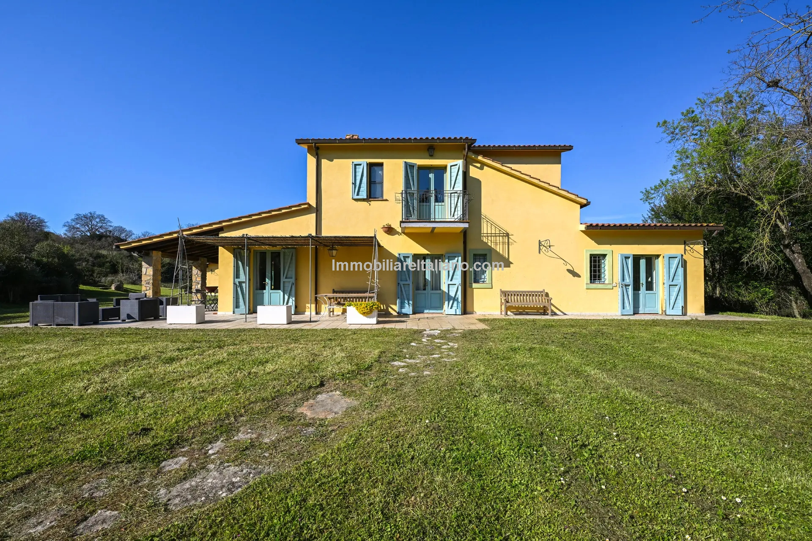

€998.000
Magliano in Toscana · Tuscany · Italy
Full Maremma character package at the €998k cap — restored farmhouse with beams and terracotta, guest house, wellness pavilion and a freshly renovated 10×6 private pool on 9,000 m² (optional extra agricultural land negotiable separately).
Opened 17 Sep 2026 on Immobiliare Italiano; asking €998.000; interiors 377 m² / 6 bed / 9 bath / exterior 9,000 m²; For Sale. Optional ~14.1 ha agricultural land separate negotiation. Pool 10×6 body-confirmed.
Open listing